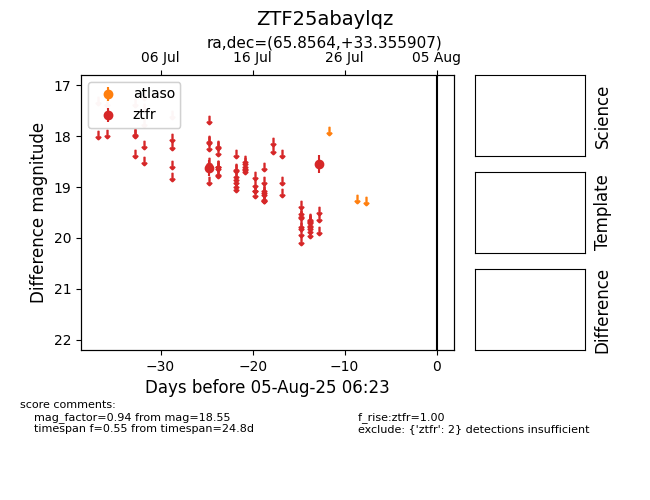

Target ZTF25abaylqz at 2025-08-05 07:33, see:
FINK: fink-portal.org/ZTF25abaylqz
Lasair: lasair-ztf.lsst.ac.uk/objects/ZTF25abaylqz
ALeRCE: alerce.online/object/ZTF25abaylqz
alt names
ZTF25abaylqz (ztf,fink)
coordinates:
equatorial (ra, dec) = (65.8564,+33.35591)
galactic (l, b) = (165.8022,-11.34365)
photometry
last ztfr=18.55
2 ztfr detections
